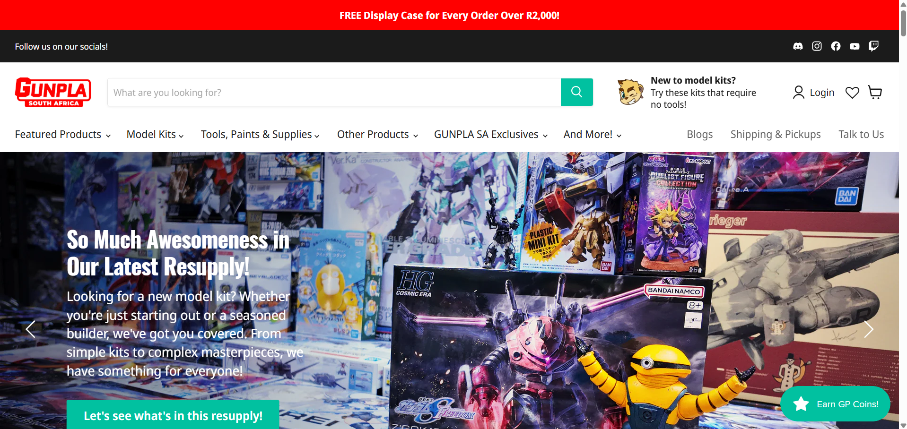
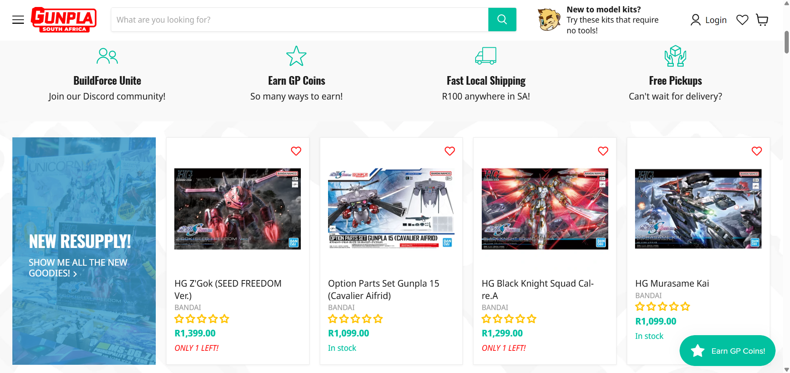
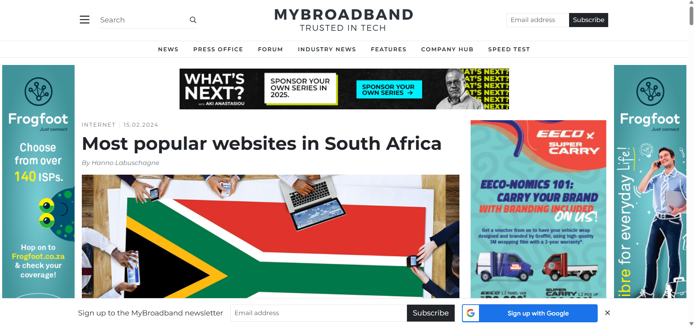
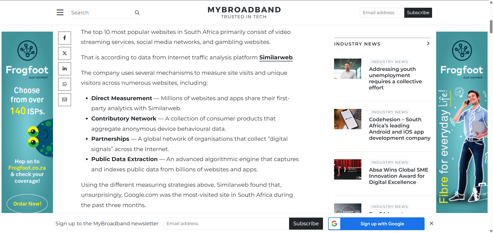

Blog post week 5
South African websites to analyze
Published by Simon Du Plooy on
The two websites I have picked are some that I have interacted with before in the past on a semi-frequent basis. The e-retail site of GunplaSA where I have purchased things and the news site MyBroadband that often pops up in my Google recommended articles on the home page.
GunplaSA:
 PROS: I have used this site prior and I have experienced it. I know the things that I look out for and want in my experience so it is much easier to analyze the UI and UX elements.
CONS: Since this is a shopping site it goes into principles of marketing and retail which I am less familiar with, and those elements will inform some of the UI and UX decisions
Next is MyBroadband, a tech news website:
 PROS: Everyone has used a news website to read an article and it is generally easy to gauge with how we want to so consume information. We know what we find convenient and easy, and what frustrates us and obfuscates the information we want to learn.
CONS: Most news sites or news aggregators have a lot of ads that clutter the design (albeit it is part of the design if intended) so some delving into ads and how they function and standards will be necessary to give the site a fair shake.